|
Kindling, Life, Mind and Negentropy The mass of the atomic nucleus can be charged up with a particular dynamically structured biopotential. In scalar electromagnetics, I use the term kindling to refer to the effect of charging up mass by a specific structured charge pattern to form such a structured potential in the nuclei. Note that we are actually and physically restructuring the nucleus itself. That is because, if the structure of the potential in the nucleus is changed, local spacetime of the nucleus is polarized in complex electromagnetic structures. The electromagnetic currents, actions, and charges of the affected nucleus adjust automatically to this structure or "grid." * |
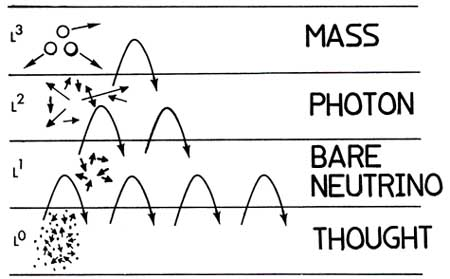
|
Figure 77. Internested levels of virtual state vacuum contain mind and thought. The vacuum also contains their interaction toward and upon mass.
*See Richard E. Prange and Peter Strance. "The semiconducting vacuum,`` Am. J. Phy. 52(1), Jan 1984 p. 19-21. The vacuum may be regarded as a semiconductor. This semiconductor, padicularly in the region close to the nucleus, may be manipulated by subjecting it to external fields, doping, etc Extra energy density can even be extracted; see H. Paul and R Fischer, "Comment on 'How can a particle absorb more than the light incident on it?' " Am. J. Phy. 51(4), Apr 1983, p 327 For the involvement of negative time/negative energy, see C W Rietdijk, "How do 'virtual' photons and mesons transmit forces between charged particles and nucleons?" Found. Phy. 7(5-6), June 1977, p 351-374. |
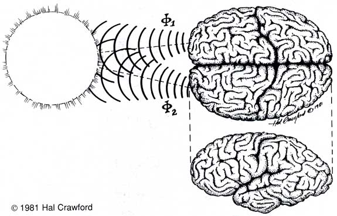
| Figure 78. The human cerebral cortex is a natural scalar interferometer. It is a virtual state tuner, processor, and transmitter-receiver. It also can produce ... and control to some extent ... phase conjugate energy and phase conjugate waves. |
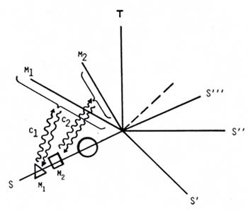
| Figure 79. Consciousness and life. These phenomena refer to/constitute a deterministic hyperspatial (virtual state) coupling between mass and an ordered hyperworld. |
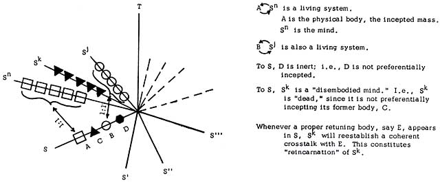
| Figure 80. Life and death.
If the tuning or coupling between the mindworld and the tuned,
structured mass body is broken, that is physical "death."
Discharge of the structured cellular potentials then produce "death
photons." Discharge of the overall, structured biopotential
of the body constitutes discharge of the "living spirit."
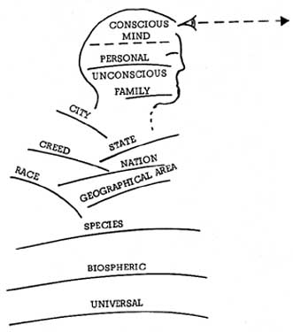 Figure 81. Layers of unconsciousness intersect hyperspatially. 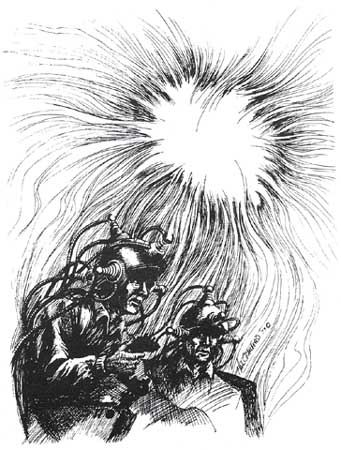 Figure 82. Scalar electromagnetics can directly interact with the various levels of human mind and personality. |
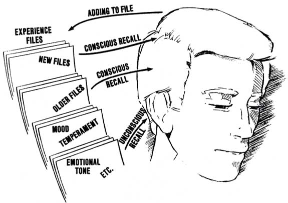
Figure 83. What personality is.
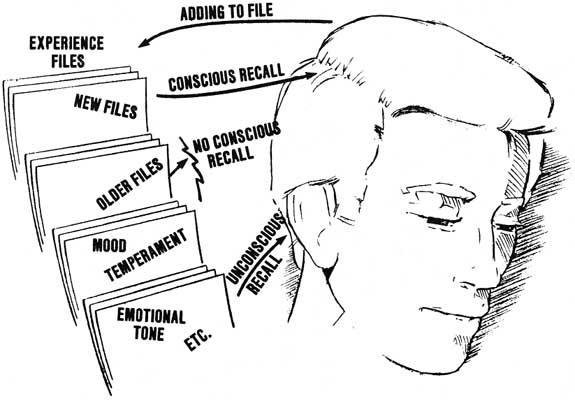
Figure 84. Jamming the "older files recall" process produces simple amnesia. If the recall process is then restored, the person regains his or her former memories.
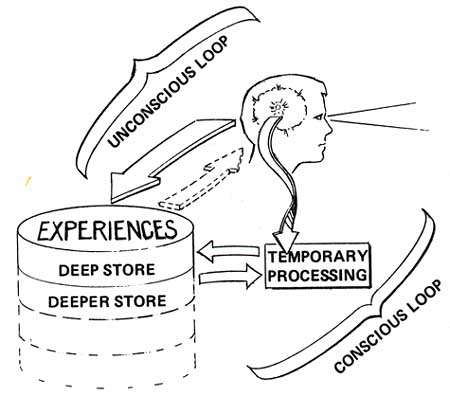
Figure 85. To sustain one's personality, continual functioning is required. All channels must be functioning.
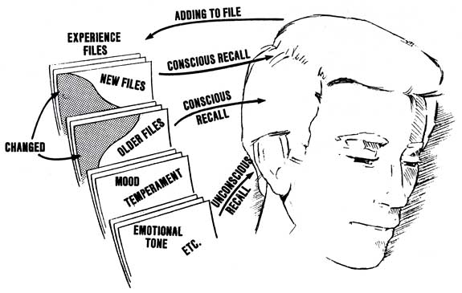
Figure 86. If the files themselves are changed, the personality itself is changed. It is possible to alter who or what a living person is.
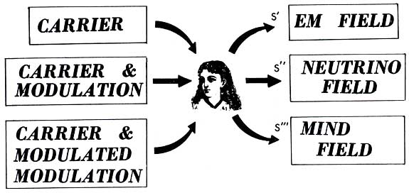
Figure 87. The mind and personality can be affected - and changed or controlled - from a distance. The Soviets have developed at least a substantial part of this technology.
|
Table 44. LISITSYN'S REPORT
Thus by tailoring the specific scalar waveform and wave substructure with which we irradiate a mass, and utilizing phase conjugate (time reversed) waves, we can directly engineer the nucleus itself when sufficient charge structure has been built up in it to form a structured potential that is powerful enough to alter/ shape the nuclear processes. We can, for example, transmute the nucleus into another form. Here an isomer form is the easiest. An isomer for an atomic nucleus (a specific isotope) has the same number of nucleons (protons and neutrons) overall as that isotope does, but a different number of protons. So it's a different element, but very specially related to its isomeric "brother." All that it takes to change a neutron into a proton or vice versa, is to "flip" a single quark (subparticle of the nucleon). Living systems can do that and transmute elements, to a small degree. For example, living systems must use phase conjugation, negative time, and negative energy. To do so, they must function nonlinearly. That is the only way they can defeat the otherwise inexorable second law of thermodynamics: that all (linear) processes continue to more and more disorder as time passes. (That's called "increasing the entropy (disorder)." Unless a biosystem could defeat that law, its genetic pattern would inevitably be disordered in a few generations, and the species would disappear. By using phase conjugation and time reversal, the living system is able to reverse the law of entropy in its time-reversed channel. That is, in that channel things go in reverse: from disorder back to order! That's called "negative entropy" or "negentropy" for short.* *To show how fully one can integrate physics and metaphysics, we point out that, since the vacuum imprints with every change, nothing is ever lost! Death, where is thy sting? It follows a priori that, to do this, the living system of necessity possesses phase conjugate energy systems (negative energy, negative time systems) that are rooted in the atomic nuclei of its body. Further, it must deterministically manipulate these phase conjugate systems. This allows the precise definition of a living or nonliving system. If the system deliberately utilizes and manipulates phase eonjugate energy/time in its atomic nuclei, it is a living system. If it does not deliberately use this, it is an inert or nonliving system. For example, this sheds a great deal of light on the nature of a virus. A virus is a single molecule. Ordinarily it clouds the distinction between life and death. Viruses can be crystallized out of solution, formed into "rock-like" crystals, and placed on the shelf, so to speak. There they can remain for many years or centuries, seemingly an inert rock. Then when placed back into their "preferred medium," so to speak, the virus crystals dissolve, separate, and "come back to life" and resume their living function. Yet the virus can be killed, in which case it is just a "hunk of rock," sitting on the shelf. In that case, it won't come back to life when placed back into its preferred medium. In one case its "deterministic phase conjugate energy system"— its mind, to put it simply—remained in the nuclei of the atoms of the crystalline form. In the other case its "mind" was destroyed or disconnected from the crystalline form.* *In the living case, the atomic nuclei remained patterned by the structured biopotential. In the case of true death, the structured biopotential is lost and the nuclei revert to their "inert'' form. A somewhat similar effect can be demonstrated in bacteria. You can "kill" bacteria, for example, with UV radiation, then hold them in the dark for 24 hours (say, for 12 generations, since a nominal bacterial generation is about 2 hours.) They will remain absolutely "lifeless" and static, with no movement or cell division. Then if you place them in the sunlight, you will be astounded to see them revive by the hundreds of thousands. In the "special kill" case here, the virtual state substructure of the UV photons just totally "jammed" the biopotential substructure functioning of the "minds" of the bacteria on one key channel. It didn't physically damage their bodies or "physical tuners." Then when placed in the sunlight, the broad frequency spectrum of the virtual substructure of the photons "dithered" and stimulated the bacteria's body-tuners, much like a "frequency massage" in all the bands. This set the physical tuners vibrating—and therefore responding once again to the biopotential substructure changes of the mind. Hence the bacteria "revived" and swam about—fat, dumb, and happy.We have stated that the mind is a physical thing, albeit a virtual or hyperspatial thing. In virtual/hyperspatial reality, it is a functioning, hyperspatial thing. 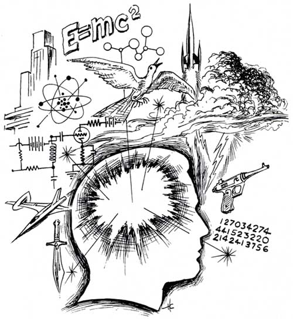 Figure 88. The mind and personality are physical things, albeit hyperspatial and virtual. Interchanges between it and an otherwise inert, functional, 4-dimensional ordinary physical system (a "body") comprise life functions, "thought," cellular control, etc. Those interchanges in a living system occur in the biopotentials residing in the atomic nuclei of the physical body, in the higher levels of biopotential in the body structures such as cells, membranes, and organs, and in the overall biopotential of the entire mass of the body. We accent that this is not mysticism, but physics. But now let us return to phase conjugation and the Priore machine. |